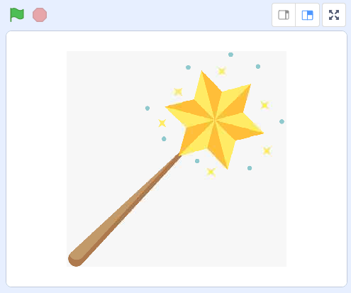
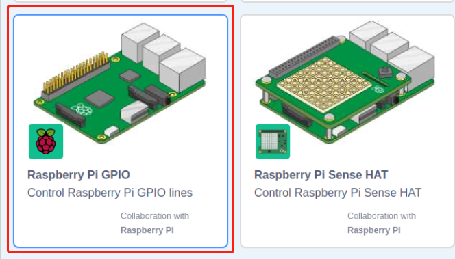
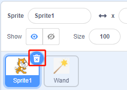
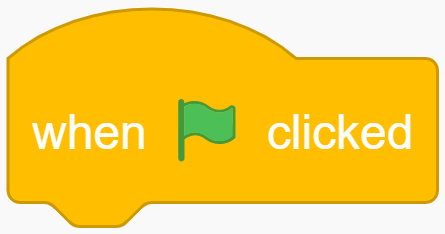
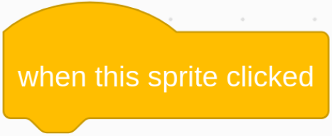
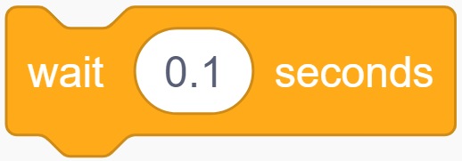
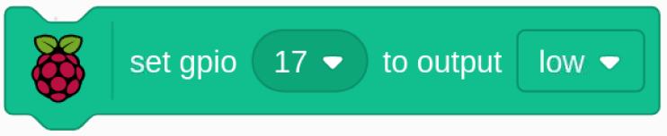

Nota
Ciao e benvenuto nella Community di appassionati di SunFounder Raspberry Pi, Arduino e ESP32 su Facebook! Approfondisci Raspberry Pi, Arduino e ESP32 insieme ad altri appassionati.
Perché unirsi?
Supporto Esperto: Risolvi problemi post-vendita e sfide tecniche con l’aiuto della nostra comunità e del nostro team.
Impara e Condividi: Scambia consigli e tutorial per migliorare le tue competenze.
Anteprime Esclusive: Ottieni accesso anticipato a nuovi annunci di prodotto e anteprime.
Sconti Speciali: Approfitta di sconti esclusivi sui nostri nuovi prodotti.
Promozioni Festive e Giveaway: Partecipa a giveaway e promozioni speciali.
üëâ Pronto a esplorare e creare con noi? Clicca su [Qui] e unisciti oggi!
1.1 Bacchetta Magica
Oggi utilizzeremo LED, Raspberry Pi e Scratch per creare un gioco divertente. Quando agitiamo la bacchetta magica, il LED si accenderà e lampeggerà.
Componenti Necessari

Costruire il Circuito

Aggiungere Estensione GPIO
Clicca sul pulsante Aggiungi Estensione nell’angolo in basso a sinistra, quindi aggiungi Raspberry Pi GPIO, un’estensione che useremo per tutti i nostri progetti Scratch.

Carica il Codice e Osserva Cosa Succede
Carica il file di codice dal tuo computer (davinci-kit-for-raspberry-pi/scratch/code) su Scratch 3.

Dopo aver cliccato sulla bacchetta magica nell’area di scena, vedrai il LED lampeggiare per due secondi.
Suggerimenti per lo Sprite
Clicca su Carica Sprite.
Carica Wand.png dal percorso davinci-kit-for-raspberry-pi/scratch/picture su Scratch 3.
Infine, elimina Sprite1.
Suggerimenti sul Codice
{kind=link}
Questo è un blocco evento il cui trigger è il clic sulla bandiera verde sulla scena. Un evento trigger è necessario all’inizio di ogni codice, e puoi selezionare altri eventi nella categoria Eventi della palette dei blocchi.
{kind=link}
Per esempio, ora possiamo cambiare l’evento di trigger con un clic sullo sprite.
{kind=link}
Questo è un blocco con un numero specificato di cicli. Inserendo il numero 10, gli eventi nel blocco verranno eseguiti 10 volte.
{kind=link}
Questo blocco serve a sospendere il programma per un periodo di tempo specificato in secondi.
{kind=link}
Poiché in Scratch si utilizza il metodo di denominazione BCM, questo codice imposta GPIO17 (BCM17) a 0V (livello basso). Poiché il catodo del LED è collegato a GPIO17, il LED si accenderà. Al contrario, se imposti GPIO(BCM17) su livello alto, il LED si spegnerà.